Материалы
для строительства загородного дома
Комплектация загородного домостроения. У нас есть всё для кровли, фасада и благоустройства. Консультация по подбору строительных материалов и установке бесплатно
Кровельные материалы
-
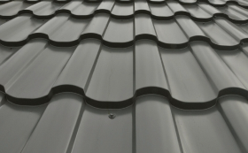
Металлочерепица
Кровельный материал, изготовленный из тонколистовой стали с полимерным покрытием
-
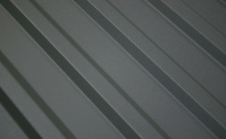
Профнастил
Строительный материал применяемый для облицовки фасадов, устройства кровли и возведения перекрытий
-
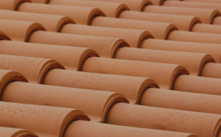
Натуральная черепица
Высококачественный кровельный материал в основе которого цемент и глина
-
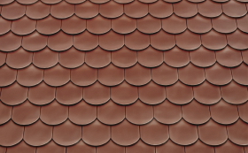
Керамическая черепица
Один из самых популярных кровельных материалов. Основа любой керамики - глина, которая после обработки, формовки и обжига превращается в плотно-спекшийся черепок
-
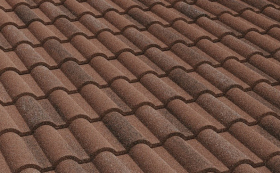
Композитная черепица
Премиальный кровельный материал состоящий из оцинкованной стали с покрытием из гранитной крошки
-
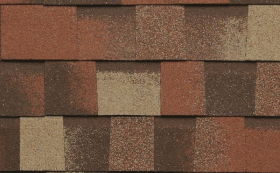
Гибкая черепица
Материал на основе стеклохолста, модифицированного битума и посыпки из каменного гранулята
-
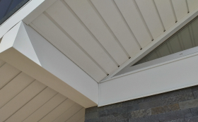
Софиты
Панели из пластика или металла, для подшивки кровельных свесов. Улучшают вентиляцию подкровельного пространства, защищают фасад от ветра и дождя
-
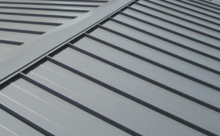
Фальцевая кровля
Кровельный материал, представляющий собой профилированные панели из тонколистовой оцинкованной стали с полимерным покрытием
Водосточные системы
-
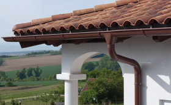
Круглый водосток
Долговечный, надёжный, красивый и экономичный вариант водостоков. Относительно легко монтируется и за счёт высококачественной стали с двусторонним полиуретановым покрытием может десятилетиями выполнять свои основные функции.
- Аквасистем
- Docke (Деке)
- Технониколь
- Orima (Орима)
- Grand-Line (Гранд-Лайн)
- Металл-Профиль
-
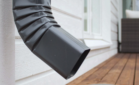
Прямоугольный водосток
Прямоугольный водосток - это металлическая система направленного отведения воды с крыши прямоугольной формы. Изготавливаются трубы из оцинкованной стали, затем покрывают полимером или пластизолом. Прямоугольный водосток имеет большую пропускную способность в сравнении с круглым водостоком. Замёрзшая вода вряд ли сможет разорвать этот водосток
- Grand-Line (Гранд-Лайн)
- Металлпрофиль
- Orima (Орима)
-
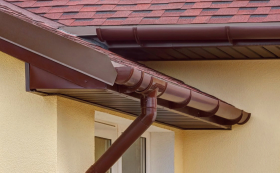
Пластиковый водосток
Водосток изготавливается из полимерного пластика. Может переносить самые неблагоприятные погодные и другие условия, такие как солнечные лучи, химические вещества и реагенты. Легко монтируется за счёт своего лёгкого веса. Долго сохраняет свой вид, за счёт отсутствия коррозии.
- Grand-Line (Гранд-Лайн)
- Docke (Деке)
- Технониколь
- Vinilon (Винилон)
-
Водосток из меди
Водосточная система из меди – идеально сочетается с медной кровлей, натуральной керамической черепицей, сланцем. Гармонично впишется в архитектуру здания, его атмосферу. Они не только обеспечат организованный водоотвод, но и станут украшением фасада здания. Медные водостоки идеально подходят к таким фасадным материалам, как керамический или клинкерный кирпич, натуральный камень и штукатурка.
- Аквасистем